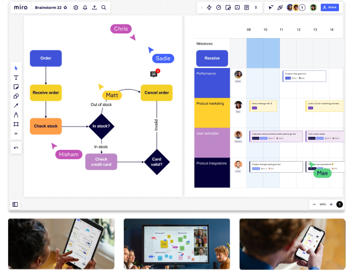

Место для командной работы
Интерактивная онлайн-доска для совместной работы команд — в любое время, в любом месте.
 Всегда бесплатно — кредитная карта не нужна45M+ пользователей


Работайте вместе, где бы вы ни находились
Работая в офисе, удалённо или в гибридном формате, с Miro ваша команда может общаться, сотрудничать и совместно заниматься творчеством в одном пространстве, из любой точки мира.
Узнать больше
Закройте лишние вкладки — всё уже здесь
Редактируете ли вы документы в Google Docs, работаете над задачами в Jira или созваниваетесь в Zoom, Miro предлагает более 100 интеграций с уже известными и полюбившимися вам инструментами.

Подходит для вашего стиля работы
- Мозговые штурмы
- Диаграммы
- Встречи
- SCRUM
- Картирование
- Дизайн-исследования
- Планирование
Мозговой штурм
Генерируйте творческие идеи и развивайте их с помощью стикеров, изображений, интеллект-карт, видео, рисования и не только.
Узнать большеСоздан для всех типов команд
- UX и дизайн
- Маркетинг
- Управление продуктом
- Разработка
- Консалтинг
- Agile-коучинг
- Продажи
Подключайте заказчиков к процессу дизайна
Проводите вовлекающие дизайн-воркшопы
Узнать больше
Интегрируйте ваши любимые инструменты
Почему и крупные, и небольшие компании доверяют Miro
Связаться с отделом продаж- Miro cоответствует требованиям безопасности корпоративного уровня, согласно стандарту ISO-27001
- Платформа номер 1 для совместной работы, согласно отзывам на G2
- Почти все компании из списка Fortune 100 используют Miro
- 1000+ шаблонов, созданных сообществом и экспертами
- 45M+ пользователей во всём мире
- 100+ интеграций с различными онлайн-сервисами и инструментами
Нравится лучшим командам мира

«Когда пришла пандемия, мы беспокоились, что креативность и продуктивность команды пострадает, так как многие из нас привыкли работать в одной комнате. Но Miro оказался идеальным инструментом для совместной работы в удаленном режиме».
Роксанна МустафаDesign Team Lead в VMware

«Miro помогает решить проблему, связанную с основным пробелом в проектировании изделий: позволяет управлять задачами с участием проектировщиков изделий, проекты которых реализуются с помощью разных инструментов.»
Джейн ЭшлиДиректор по проектированию DocuSign
«Когда мы начали использовать Miro, скептицизм сменился верой в инновации, теперь у нас есть инструмент, который лежит в основе любой работы, и мы продолжим использовать его и в будущем».
Лора БейрдAssociate Design Director в frog
Присоединяйтесь к 45M миллионам пользователей уже сегодня
Начните бесплатно и перейдите на другой тариф в любое время. Хотите стать корпоративным клиентом?
Свяжитесь с отделом продаж